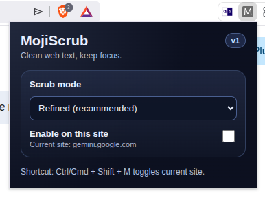

Clean web text, keep focus. A minimalist extension to strip distracting emojis from your browsing experience.
Add to Chrome
Our intelligent filtering removes emojis without breaking the UI layout or deleting essential icons.
Use Ctrl/Cmd + Shift + M to quickly enable or disable scrubbing on the current site.
Choose exactly where MojiScrub works. Keep emojis on social media, but scrub them on documentation and code.